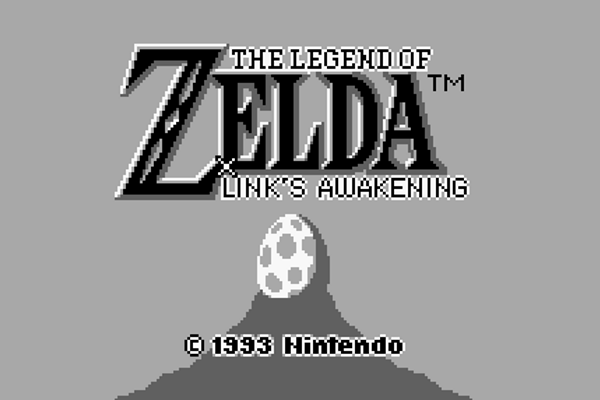
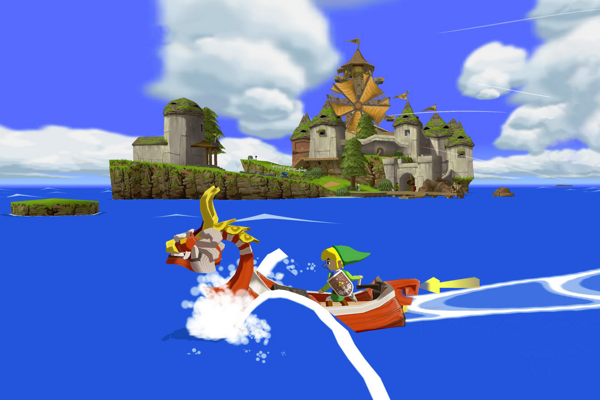

El primer juego de la serie, The Legend of Zelda, salió a la venta para el Famicom Disk System en febrero de 1986 en Japón, y no tuvo su estreno en otros países sino hasta el año siguiente, cuando llegó en formato de cartucho para la Nintendo NES. Fue el primero de NES en poseer una batería interna para guardar las partidas, y se lo consideró como un «predecesor espiritual» para el género RPG. Su éxito en ventas llevó a la producción de nuevos títulos que han enriquecido la trama original, con nuevos personajes, elementos y diseños gráficos, y que se han lanzado para las distintas consolas de Nintendo, incluyendo las portátiles. Desde entonces, existen 16 videojuegos oficiales hasta 2012, sin tomar en cuenta los remakes de algunos como Link's Awakening DX y Ocarina of Time 3D. El más reciente es Skyward Sword, que llegó al mercado a finales de 2011, para la Wii. A principios de 2013, Nintendo anunció el lanzamiento de una nueva versión con gráficos mejorados de The Wind Waker para Wii U, y otro juego inédito aún sin título ni fecha de estreno pero para la misma consola mencionada, además del debut, en diciembre de 2013, de un nuevo juego denominado The Legend of Zelda: A Link Between Worlds, para la portátil Nintendo 3DS.
La serie de videojuegos The Legend of Zelda, distribuida por Nintendo desde 1986, consta de 17 videojuegos hasta 2014, sin considerar las distintas versiones que se han producido de algunos de estos y lanzado de forma posterior para otras consolas, como es el caso de Ocarina of Time 3D. Tampoco se incluyen los juegos derivados como Link's Crossbow Training, ni los títulos desarrollados por otras empresas en los que aparezcan personajes o elementos de The Legend of Zelda —para mayor información sobre estos, véase el artículo principal de la serie—.
La trama de los distintos juegos es variable aunque mantiene un concepto en común: las hazañas del joven guerrero Link para rescatar a la Princesa Zelda, secuestrada por el malvado hechicero Ganondorf, a quien debe derrotar para salvar al reino de Hyrule. El título más reciente es The Legend of Zelda: A Link Between Worlds, lanzado al mercado en 2013 para la consola portátil Nintendo 3DS.
A continuación se mencionan, ordenados por año de estreno, cada uno de los videojuegos de The Legend of Zelda, junto con información sobre su producción, y recepción comercial y crítica. Los juegos que aquí aparecen son aquellos que ya se estrenaron, por lo que cualquier información sobre posibles nuevos juegos aparece en el artículo principal de la serie con sus respectivas fuentes.
The Legend of Zelda
-
Publicación original
- Japón: 21 de febrero de 1986
- Norteamérica: 22 de agosto de 1987
- Europa: 15 de noviembre de 1987
-
Plataformas en las que ha sido publicado
- 1986—Famicom Disk System (sólo en Japón)
- 1987—Nintendo Entertainment System2
- 2003—GameCube3
- 2004—Game Boy Advance4
- 2006—Wii (eShop)
- 2011—3DS (eShop)
- 2013—Wii U (eShop)
-
Argumento
El rey de la maldad, Ganon, quien acaba de obtener su libertad después de haber escapado del Mundo Oscuro, ha capturado a la Princesa Zelda. Momentos antes, Zelda dividió la Trifuerza de la Sabiduría en ocho fragmentos, los cuales ocultó en el reino de Hyrule. Link debe recuperar las piezas y rescatarla.
Es el primer juego de la saga y se lanzó originalmente para la videoconsola Famicom Disk System, que utilizaba disquetes en vez de cartuchos. Al año siguiente se distribuyó fuera de Japón para la consola Nintendo NES, después de mejorar la capacidad de los cartuchos, a los que se les incluyó una memoria de acceso aleatorio —RAM— alimentada por una batería interna. De esta forma el jugador podía guardar el progreso del jugador antes de apagar la consola, y sus datos de la partida quedaban almacenados en la consola.
Cuando el jugador acaba el juego por primera vez, tiene la posibilidad de jugar una segunda misión en la que las mazmorras y otros elementos cambian respecto a la versión original, además de exigir una mayor dificultad para derrotar a los enemigos. Después de su estreno, se le catalogó como un videojuego multigénero ya que contiene elementos de acción, aventura, rol y puzzle. Su diseño incluyó rasgos diferentes a cualquier otro juego de rol, al tener gráficos caricaturescos, una historia de fantasía y una composición musical distintiva. Fue un «predecesor espiritual» del RPG, del cual han sido basados otros títulos como Soul Blazer y la serie Final Fantasy. El sitio web GameSpot lo calificó como uno de «los 15 videojuegos más influyentes de todos los tiempos», mencionando que se trata de uno de los primeros en mostrar un escenario abierto, en contar con un sistema de juego no lineal y en hacer uso de la opción de guardar la partida. Se vendieron más de 6,5 millones de copias, siendo el primer título de NES en superar el millón de unidades comercializadas.
En 1994, durante los últimos años de la Famicom, el juego volvió a ser lanzado en formato de cartucho.16 Una versión modificada, conocida como BS Zelda no Densetsu, fue lanzada a mediados de los años 1990 para el Satellaview de Super Famicom, en Japón. A principios de 2010, Satoru Iwata mostró en la página web oficial de Nintendo una serie de bocetos de los personajes, objetos y mapas correspondientes a este título, además de diversos apuntes sobre la estructura y patrones que luego darían forma al diseño final del juego.
The Adventure of Link
-
Publicación original
- Japón: 14 de enero de 1987
- Norteamérica: 1 de diciembre de 1988
- Europa: 26 de septiembre de 1988
-
Plataformas en las que ha sido publicado
- 1987—Famicom Disck System
- 1988—Nintendo Entertainment System
- 2003—GameCube3
- 2004—Game Boy Advance
- 2007—Wii (eShop)
- 2011—3DS (eShop)
- 2013—Wii U (eShop)
-
Argumento
Un misterioso hechicero ha lanzado una maldición contra la Princesa Zelda, que ha provocado que esta caiga en un sueño profundo. Link descubre que el responsable huyó en las viejas ruinas del Gran Palacio, y que la única manera de romper el hechizo en la entrada del templo es colocando los fragmentos de un cristal mágico en su lugar correspondiente.
Al igual que el título original, Nintendo lo distribuyó al principio para la Famicom Disc System, menos de un año después de The Legend of Zelda, como continuación directa. A pesar de mantener el énfasis en los elementos característicos del género de rol, tales como la adición de puntos de experiencia, vidas extra y el uso de diferentes perspectivas con un mismo personaje, se apartó significativamente de la originalidad de su predecesor, motivo que lo llevó a ser catalogado como la «oveja negra» de la serie. Su desarrollo fue responsabilidad de un equipo conformado por programadores y personal que no participaron en la producción del juego original. Entre las ausencias notables destacan las de Takashi Tezuka y Kōji Kondō.
No obstante, es uno de los más exitosos de Nintendo al haber vendido más de cuatro millones de copias, además de que estableció varios elementos que han permanecido en otros juegos de Zelda, tales como la magia y hechizos, la Trifuerza del Valor y el personaje de Dark Link. El sitio web IGN lo describió como «una aventura recomendada», aunque agregó: «no esperen ver el mismo tipo de interactividad que hay en los clásicos títulos de la saga».
A Link to the Past
-
Publicación original
- Japón: 21 de noviembre de 1991
- Norteamérica: 13 de abril de 1992
- Europa: 24 de septiembre de 1992
-
Plataformas en las que ha sido publicado
- 1991-Super Famicom/Super Nintendo
- 1997-Satellaview
- 2002-Game Boy Advance
- 2006-Wii (eShop)
- 2014-Wii U (eShop)
-
Argumento
Un malvado hechicero llamado Aghanim se ha apoderado de Hyrule y usa su poder para liberar a Ganon de su aprisionamiento en el Mundo de las Tinieblas. Tras rescatar a la Princesa Zelda que estaba secuestrada por Aghanim, Link libera a los descendientes de los siete sabios y fortalece los sellos mágicos que mantienen aprisionado a Ganon.
Para el tercer juego de Zelda, cuya producción Nintendo realizó de forma paralela a la de Super Mario World, Miyamoto quería mejorar algunos aspectos técnicos del primer juego que en su momento no había podido incorporar debido a las limitaciones de la NES. Aparte de llevar a cabo algunas modificaciones en los gráficos, optaron por expandir la limitada memoria que existía en esa época para la mayoría de los cartuchos de Super Nintendo, de 512 kilobits a un megabyte. Como resultado, pudieron crear un escenario más amplio en donde incorporaron el Mundo de la Luz y el Mundo de las Tinieblas, dos universos paralelos a los cuales el protagonista tiene acceso por medio de un portal. Este concepto junto con la Espada Maestra quedaron establecidos en la saga y se utilizaron en los siguientes juegos. Para su lanzamiento en América, se modificaron ciertos elementos que aludían a temas religiosos. Por ejemplo, sustituyeron el subtítulo original en japonés, «Trifuerza de las Diosas», por el de de A Link to the Past, y eliminaron los jeroglíficos egipcios del vocabulario hyliano.
Desde 1991 se han vendido más de cuatro millones de copias de A Link to the Past. Constantemente es calificado como uno de los mejores videojuegos de todos los tiempos, así como uno de los mejores de Nintendo. Los elogios coinciden en la calidad de sus gráficos y el sistema de juego. IGN comentó al respecto: «A Link to the Past hizo que su protagonista de orejas puntiagudas se involucrara en una misión que lo llevaría a no solamente uno, sino dos mundos hermosamente diseñados, detallados con un arte que es envidiable para los actuales programadores de gráficos por ordenador [...] con un brillante diseño de sus niveles y la combinación perfecta de acción y acertijos que hicieron que cada área se sintiera relevante». A mediados de 2013 se anunció el estreno de The Legend of Zelda: A Link Between Worlds, basado en el diseño de A Link to the Past.
Link's Awakening
-
Publicación original
- Japón: 6 de junio de 1993
- Norteamérica: 1 de agosto de 1993
- Europa: 1 de diciembre de 1993
-
Plataformas en las que ha sido publicado
- 1993-Game Boy
- 1998-Game Boy Color
- 2011-3DS eShop
-
Argumento
Después de derrotar a Ganondorf, Link navega en un barco para buscar nuevas aventuras. Durante una tormenta, la embarcación naufraga. Inconsciente por la magnitud del suceso, Link despierta más tarde en una playa, de donde es rescatado por Tarin y su hija Marin. Un búho le informa que necesita reunir y tocar los ocho «instrumentos de las sirenas» para poder despertar a un gran pez y partir de la isla Koholint, lugar en donde se desarrolla la historia.
Fue el primer título de The Legend of Zelda en ser lanzado para una videoconsola portátil de Nintendo. Su desarrollo inició tras la conclusión del juego japonés Kaeru no Tame ni Kane wa Naru, lanzado para Game Boy. Takashi Tezuka, quien había dirigido previamente a Super Mario Bros. 3, se encargó también del diseño gráfico de Link's Awakening. Para su estreno en Norteamérica, fue realizada una competición internacional denominada Zelda Whistle Stop Tour. La competencia duró tres días, durante los cuales numerosos jugadores pudieron experimentar los nuevos avances técnicos de la serie —una batería con mayor memoria de datos, así como el progreso del juego en una consola portátil—.
En 1998, Nintendo decidió relanzar Link's Awakening a manera de aplicación asesina para promocionar su nueva consola portátil Game Boy Color. El remake fue denominado TLZ: Link's Awakening DX —para diferenciarlo del original— e introdujo numerosas mejoras y elementos de interactividad inéditos. Algunas de las nuevas características de esta adaptación fueron la completa texturización de los gráficos visuales, así como la adición de una aplicación que posibilitó a los usuarios capturar fotografías conforme avanzaba la historia. En enero de 2010, Tezuka declaró que la serie Twin Peaks había servido de inspiración para el diseño de Link's Awakening; en sus propias palabras: «En aquel momento Twin Peaks era bastante popular, el drama giraba alrededor de un puñado de personajes en una ciudad pequeña, y queríamos algo parecido a eso [en el videojuego]». En cuanto a recepción crítica, EGM en español lo catalogó como el «mejor juego de Game Boy de todos los tiempos», de forma similar a Nintendo Power, publicación que lo reconoció en diversas categorías de premiación, entre ellas «mejores gráficos», «mejor sonido», «mejor historia» y «mejor interactividad».
Ocarina of Time
-
Publicación original
- Japón: 21 de noviembre, 1998
- Norteamérica: 23 de noviembre, 1998
- Europa: 11 de diciembre, 1998
-
Plataformas en las que ha sido publicado
- 1998-Nintendo 64
- 2002-GameCube
- 2003-Nintendo iQue
- 2007-Canal Tienda Wii
- 2011-Nintendo 3DS
-
Argumento
La historia fue catalogada como «una de las más extrañas, oscuras y tristes de toda la franquicia».Transportado a un mundo paralelo por fuerzas misteriosas provenientes de Skull Kid, Link se encuentra en un lugar que fue amenazado por el poder de un misterioso objeto conocido como la Máscara de Majora. Su misión es rescatar a los habitantes de este lugar, Termina, ante un inminente peligro que los acecha.
Producido por la división Nintendo EAD, especializada en el diseño de videojuegos para la consola Nintendo 64, Ocarina of Time es el quinto videojuego de la serie por línea de estrenos, aunque es uno de los primeros en cuanto a la cronología de Zelda, al ser considerado incluso como una precuela directa a sus cuatro predecesores. Asimismo, es el primer juego de Zelda que incluyó gráficos 3D, cualidad que le reportó aclamaciones de parte de la crítica, acompañadas de éxito comercial en todo el mundo.
Su producción se realizó de forma simultánea a la de Super Mario 64 que era dirigido por Miyamoto, razón por la cual este último participó solamente como productor de Ocarina of Time, y supervisó el proceso de diseño. Tanto este como Super Mario 64 se convirtieron en los primeros juegos tridimensionales de sus respectivas series. Al principio, Nintendo planeaba lanzarlo después de Mario, para la expansión Nintendo 64DD. Sin embargo, poco después desechó esta posibilidad y prefirió diseñarlo para un cartucho de 32 megabytes, que en ese entonces era la mayor extensión de memoria en la industria de los videojuegos. Uno de los programadores describió que el ideal del equipo durante el desarrollo del juego era «trabajar con pasión para crear algo nuevo sin precedentes». En una entrevista hecha a finales de 2009, Eiji Aonuma, director principal, reveló que a pesar de la popularidad de Ocarina of Time «en cada juego sucesivo de The Legend of Zelda he intentado mejorar lo que en su momento no pude hacer. [...] Es como si hubiese estado haciendo un remake a lo largo de estos años, solucionando todos esos problemas técnicos que en aquella época eran insalvables».
Ocarina of Time es el juego más vendido de 1998, con un total de 7,6 millones de copias comercializadas —sin incluir sus relanzamientos en otras consolas—. Su diseño e interactividad fueron también reconocidos en el Festival de arte de Japón, en donde obtuvo el Gran Premio del Jurado, al igual que en los premios otorgados por la Academia de Artes y Ciencias Interactivas, donde fue reconocido como el «juego del año». Con el paso de los años, Ocarina of Time ha aparecido en muchas de las encuestas de «Mejores videojuegos de todos los tiempos», entre ellos los listados de Electronic Gaming Monthly, IGN, y la revista Edge. En 2008 el Libro Guinness de los récords lo ratificó como el juego con mejores críticas en toda la historia de la industria, una categoría que preservaba aún hasta 2010.
En 2002 Nintendo puso a la venta una edición inédita la consola GameCube denominada The Legend of Zelda: Ocarina of Time Master Quest, misma que sólo estuvo disponible para quienes reservaron el juego The Wind Waker. En principio esta edición estaba destinada para el Nintendo 64DD a modo de expansión del original, pero nuevamente esta idea fue rechazada y su desarrollo para dicho sistema cesó, por lo que decidieron lanzarlo en forma de disco extra. Aún cuando la trama era la misma, introdujo nuevos calabozos y puzzles.84 En el evento E3 de 2010, la empresa nipona anunció la producción de un remake para la portátil Nintendo 3DS, la cual cuenta con gráficos mejorados debido a la incorporación de una interfaz en tercera dimensión. Aonuma comentó, en una entrevista realizada por IGN: «no quería simplemente relanzarlo en una plataforma diferente, yo quería tener una razón específica para rehacer Ocarina of Time. [...] Ahora, con 3D, podemos coger la atmósfera de Hyrule y añadirle profundidad, dándoles un sentimiento más amplio, una sensación más envolvente». Su estreno en Japón ocurrió el 16 de junio de 2011, siendo lanzado pocos días después en el resto de mercados, tal como ocurrió con el original.
Majora's Mask
-
Publicación original
- Japón: 27 de abril de 2000
- Norteamérica: 26 de octubre de 2000
- Europa: 17 de noviembre de 2000
-
Plataformas en las que ha sido publicado
- 2000—Nintendo 64
- 2002—GameCube
- 2009—Canal Tienda Wii
-
Argumento
Siendo apenas un niño, Link es engañado por Ganondorf, el rey de los Gerudo, quien lo ha usado durante largo tiempo como principal recurso para introducirse en el Reino Sagrado, lugar en donde se encuentra guardada la Trifuerza. Al llegar al reino, Ganondorf toca con sus manos ésta y transforma al reino en un lugar desierto y oscuro. Link debe solucionar esta grave situación, y con la ayuda de Rauru debe viajar a través del tiempo con el fin de obtener los poderes de los Siete Sabios (Saria, Ruto, Darunia, Impa y Nabooru, junto con Rauru y Zelda).
Al igual que el juego anterior, Majora's Mask incorporó gráficos tridimensionales en su diseño. Hay que resaltar que su desarrollo demoró solamente dos años, a diferencia de los cuatro necesarios para Ocarina of Time, pues el equipo responsable de su producción usó el mismo motor de juego y gráficos de este último mencionado. En cuanto al sistema de juego, una de sus principales características es que la trama acontece únicamente en 3 días, esto es 72 horas en total, que equivalen a 54 minutos de juego real para el jugador. Sin embargo, con ayuda de la Ocarina del tiempo, Link puede viajar en el tiempo para resolver algunos acertijos y así incrementar el tiempo de juego total. Además, el personaje jugador es capaz de convertirse en diferentes criaturas por medio de máscaras mágicas, cada una de las cuales le brinda una habilidad especial.
A mediados de 1999, la revista Famitsu anunció la producción de un nuevo título de Zelda que sería lanzado para la expansión Nintendo64DD. El artículo informativo sobre el proyecto —en ese entonces denominado Ura Zelda— no mencionaba en qué fechas se lanzaría el juego, aunque se especuló que podría tratarse de una expansión mejorada de Ocarina of Time. En la exposición SpaceWorld de 1999, Nintendo dio a conocer una demostración de otro proyecto que llevaba por nombre Zelda: Gaiden. Algunos de los elementos de este permanecieron en la edición final de Majora's Mask; entre ellos están el reloj que domina a Clock Town, un contador de pantalla que muestra el tiempo transcurrido y una de las máscaras. Poco tiempo después, Miyamoto confirmó que Ura Zelda y Zelda: Gaiden eran proyectos totalmente diferentes: el primero pasaría a ser conocido como Master Quest, la edición mejorada de Ocarina of Time, mientras que el segundo sería el nuevo juego de la serie, Majora's Mask. Por primera vez en la historia de la serie, Aonuma y Yoshiaki Koizumi se hicieron cargo de la dirección de un videojuego tridimensional. De acuerdo al primero: «nos enfrentamos a la difícil cuestión de resolver qué clase de juego podría seguir a Ocarina of Time, con todo y sus siete millones de unidades vendidas en todo el mundo, así que decidimos utilizar un argumento que tuviera cierto límite, con lo que esperabamos compactar los detalles técnicos del juego, y brindarle al mismo tiempo una determinada profundidad al tipo de interactividad del mismo».
Tras su estreno, se vendieron tres millones de copias, y cierto segmento de la crítica lo consideró como uno de los títulos más originales de The Legend of Zelda.
Oracle of Seasons y Oracle of Ages
-
Publicación original
- Japón: 27 de abril de 2000
- Norteamérica: 26 de octubre de 2000
- Europa: 17 de noviembre de 2000
-
Plataformas en las que ha sido publicado
- 2000—Nintendo 64
- 2002—GameCube
- 2009—Canal Tienda Wii
-
Argumento
La historia fue catalogada como «una de las más extrañas, oscuras y tristes de toda la franquicia». Transportado a un mundo paralelo por fuerzas misteriosas provenientes de Skull Kid, Link se encuentra en un lugar que fue amenazado por el poder de un misterioso objeto conocido como la Máscara de Majora. Su misión es rescatar a los habitantes de este lugar, Termina, ante un inminente peligro que los acecha.
El diseñador Yoshiki Okamoto y la empresa Flagship —fundada por Nintendo, Capcom y Sega— empezaron a desarrollar nuevos juegos para la portátil Game Boy Color, mismos que estarían interconectados por medio de contraseñas, aunque tendrían historias e interactividad independientes uno del otro. Originalmente, Okamoto quería producir un remake del primer videojuego de Zelda, que sería lanzado para la consola portátil mencionada anteriormente. Debido a la complejidad del motor de juego, el equipo de diseño acudió en búsqueda de consejos con Miyamoto, y como resultado Nintendo y Capcom comenzaron a colaborar recíprocamente en la producción de seis títulos: dos de ellos estarían basados en juegos previos, mientras que los restantes constituirían nuevas aventuras en el reino de Hyrule.
Poco tiempo después, el equipo volvió a tener problemas técnicos relacionados con el sistema de interconexión. A esto se sumó la presión ejercida por Okamoto, quien quería lanzar los juegos sucesivamente, separando la comercialización de cada título en plazos de cuatro a cinco meses solamente. A consecuencia de lo anterior, Flagship decidió comenzar con la producción de su planeada saga a manera de dos trilogías simultáneas. La primera comenzó a ser referida como «serie de la Trifuerza», en referencia al objeto omnipotente en que está basada The Legend of Zelda. Al estar conformada por tres fragmentos con cualidades diferentes, cada juego de la trilogía estaba asociado con uno de ellos. Sin embargo, después de la demostración del primer juego, en 1999 —con el nombre temporal de The Legend of Zelda: The Acorn of the Mystery Tree: Tale of Power—, las limitaciones del motor de juego y la dificultad para coordinar la trilogía comenzaron a complicar el diseño de los juegos restantes, provocando la cancelación del proyecto y la producción de sólo dos juegos, que más tarde pasarían a ser Oracle of Seasons y Oracle of Ages.
El modo de juego de ambos títulos es parecido al de Link's Awakening, en cuanto a interactividad y gráficos principalmente. Tras su estreno, fueron un considerable éxito comercial y recibieron críticas positivas por numerosas publicaciones, quienes percibieron en ambos «un sorpresivo realismo acompañado de un adecuado diseño en sus gráficos».
The Wind Waker
-
Publicación original
- Japón: 13 de diciembre de 2002
- Norteamérica: 24 de marzo de 2003
- Europa: 3 de mayo de 2003
-
Plataformas en las que ha sido publicado
- 2002-GameCube
- 2013—Wii U
-
Argumento
La hermana de Link ha sido secuestrada por un enorme pájaro. Para encontrarla, Link se aventura en una travesía en medio de islas rodeadas por un gran océano, el mismo que resultó tras una inundación que anegó Hyrule para evitar que Ganondorf invadiera el reino en ausencia de Link. Esta vez, Link debe controlar la dirección del viento con ayuda de la batuta de los vientos para poder viajar a través de las islas y completar su misión principal.
Ante el lanzamiento comercial de las videoconsolas Dreamcast y PlayStation 2, de Sega y Sony respectivamente, Nintendo anunció a principios de 1999 el desarrollo de una nueva consola perteneciente a la nueva generación en la industria, Nintendo GameCube. Junto a la presentación de la misma fueron hechas algunas demostraciones de futuros juegos que estaban siendo desarrollados en base a este sistema. Dicha revelación incluyó una escena en la que Link y Ganondorf se enfrentaban en una pelea. Aun cuando constituía una simple muestra, muchos seguidores de la saga especularon que dicho duelo sólo podría pertenecer a un nuevo título, que estaría produciéndose en ese instante.
En 2001 Nintendo presentó, en Nintendo Space World, una serie de secuencias relacionadas con el siguiente juego de Zelda. La demostración desató polémica, al presentar elementos diseñados con la técnica de animación virtual cel-shading —gráficos similares a dibujos animados interactivos—. Miyamoto explicó que había decidido utilizar esa técnica «para que todos pudieran disfrutar de Zelda, sin importar la edad».Inmediatamente varios seguidores expresaron su opinión; algunos dijeron haberse sentido impresionados por los nuevos gráficos, aunque otros manifestaron su desacuerdo ante lo que denominaban irónicamente como «un nuevo Celda» —contracción gramatical de «cel-shading» y «Zelda»—.Inquieto ante una posible acogida negativa, Miyamoto rehusó dar más detalles del juego hasta que llegara el momento de su lanzamiento y los jugadores pudieran percatarse de la importancia de la historia e interactividad del mismo. El anuncio del título fue hecho durante la exposición anual E3.126 Finalmente, The Wind Waker fue lanzado a finales de 2002 en Japón, y principios de 2003 en Norteamérica. Diversas muestras, asociaciones y publicaciones especializadas galardonaron al juego por el «estilo visual» y su «dirección artística».
Four Swords
-
Publicación original
- Japón: 20 de marzo de 2003
- Norteamérica: 2003
-
Plataformas en las que ha sido publicado
- 2003-Game Boy Advance
- 2011-DSiWare
-
Argumento
El malvado mago Vaati secuestra a la Princesa Zelda y la mantiene prisionera en su palacio, para rescatarla, Link debe utilizar una misteriosa espada que le permite dividirse en cuatro Links de distintos colores, que deben unir fuerzas entre ellos para superar todos los obstáculos que el malvado hechicero les pone en su camino.
Ante el lanzamiento comercial de las videoconsolas Dreamcast y PlayStation 2, de Sega y Sony respectivamente, Nintendo anunció a principios de 1999 el desarrollo de una nueva consola perteneciente a la nueva generación en la industria, Nintendo GameCube. Junto a la presentación de la misma fueron hechas algunas demostraciones de futuros juegos que estaban siendo desarrollados en base a este sistema. Dicha revelación incluyó una escena en la que Link y Ganondorf se enfrentaban en una pelea. Aun cuando constituía una simple muestra, muchos seguidores de la saga especularon que dicho duelo sólo podría pertenecer a un nuevo título, que estaría produciéndose en ese instante.
En 2002, Nintendo distribuyó nuevamente A Link to the Past esta vez en un paquete que incluyó el juego Four Swords, en una colección titulada The Legend of Zelda: A Link to the Past y Four Swords, para la consola portátil Game Boy Advance. La empresa Flagship se encargó tanto del remake como de la producción del primer juego en la saga destinado para varios jugadores. La adaptación de A Link to the Past contiene algunas modificaciones en el diseño de sus gráficos, además de introducir efectos de sonido para los personajes —vocalizaciones similares a las utilizadas en Ocarina of Time y Majora's Mask—. Además, incorporó la «transferencia de logros» como nueva aplicación; por ejemplo, si el jugador aprende una nueva técnica para el manejo de la espada en cualquiera de los dos juegos, contará con la misma para la otra adaptación de la misma colección.
Tras su estreno, obtuvo buenas críticas en general por parte de la prensa; por ejemplo, el sitio web GamePro lo describió como una «obra maestra», y elogió los personajes y elementos secretos del escenario, al comentar que obligaban a que el jugador se tomara su tiempo y fuese paciente en la exploración del territorio. Hasta 2013, se tiene noción de 2,7 millones de copias vendidas del juego, lo que lo convierte en el juego más exitoso de la Game Boy Advance —véase la sección Comercial del artículo principal de la serie para mayor información—. En septiembre de 2011, como parte de la celebración del 25 aniversario de la saga, se lanzó para Nintendo DSi, Nintendo DSi XL y Nintendo 3DS un remake del juego con la coletilla de «Anniversary Edition». El juego se lanzó de forma gratuita a estas plataformas en formato descarga digital mediante el DSiWare. Esta versión es prácticamente igual a la original, salvo la posibilidad de jugar en solitario, junto a nuevos escenarios procedentes de algunos juegos de la saga.
Four Swords Adventures
-
Publicación original
- Japón: 18 de marzo de 2004
- Norteamérica: 7 de junio de 2004
- Europa: 7 de enero de 2005
-
Plataformas en las que ha sido publicado
- 2004-GameCube
-
Argumento
En una noche de tormenta, la Princesa Zelda y las doncellas del santuario convocan a Link para que acuda al Castillo de Hyrule y las proteja de Vaati, mientras abren el portal del santuario en donde se encuentra la legendaria Espada Cuádruple. Al momento de abrirlo, surge una silueta oscura similar a Link, llamada Link Oscuro, que secuestra a las doncellas. Con el objetivo de frustrar los oscuros propósitos del demonio Vaati, Link debe recurrir al legendario poder de la espada. Separado en cuatro copias casi idénticas de sí mismo, Link vuelve a aventurarse en tierras repletas de enemigos y calabozos llenos de puzzles en una perspectiva aérea.
Durante la exposición E3 de 2003, Nintendo presentó dos nuevos juegos de Zelda para GameCube que podrían conectarse con la portátil Game Boy Advance: Four Swords y Tetra's Trackers. Al principio, la compañía buscaba una interconexión similar a la que tendría la fallida «serie de la Trifuerza», predecesora de Oracle of Ages & Seasons, y quería desarrollar un sistema de juego simultáneo de «acción por niveles» —similar al de Super Mario Bros.—. A finales de ese mismo año, anunció que ambos conformarían un solo disco compacto, el cual estaría acompañado de un tercer juego, Shadow Battle. En 2004 debutó Four Swords Adventures, conformado por los juegos Hyrulean Adventure, Shadow Battle y Navy Trackers, y diseñado con el mismo motor de juego que Four Swords.141 El título permite la conexión de hasta cuatro consolas portátiles para jugar una partida multijugador.
Tras su comercialización, se convirtió en el tercer juego más vendido del 2004 en Norteamérica. Además, se produjo una adaptación literaria del mismo basada en la trama del juego. En cuanto a recepción crítica, tuvo buenos comentarios en general; en su evaluación, GameSpot señaló que la conexión del título con la portátil es «una buena razón para invertir en un cable para GameCube y Game Boy Advance», además de comentar que «el uso de la portátil como controlador tiene un impacto notable en la experiencia de juego».
The Minish Cap
-
Publicación original
- Japón: 4 de noviembre de 2004
- Norteamérica: 10 de enero de 2005
- Europa: 12 de noviembre de 2004
-
Plataformas en las que ha sido publicado
- 2004-Game Boy Advance
- 2011-3DS eShop
-
Argumento
El rey de Hyrule envía a Link a una increíble misión que lo llevará a lugares que él jamás hubiera imaginado. Con la ayuda de Ezero, una gorra especial que lleva a cabo los deseos de su portador, Link puede reducir su tamaño y explorar el mundo mágico de los diminutos Minish.
Es la tercera entrega de Zelda que usa el concepto de la Espada Cuádruple en su trama, para expandir los sucesos relatados en Four Swords y Four Swords Adventures. Su desarrollo comenzó después de Oracle of Ages & Seasons por Flagship, responsable de las anteriores, que quería crear un nuevo título para la portátil Game Boy Advance. En septiembre de 2004, pocos meses antes de su estreno, Nintendo publicó un sitio web donde mostró varios aspectos relacionados con la interactividad de The Minish Cap, entre ellos la habilidad de Link para disminuir de tamaño.
Por primera vez en la historia de la franquicia, salió antes a la venta en Europa que en Norteamérica, debido a que la nueva portátil Nintendo DS saldría a la venta en la primavera de 2005 en el continente europeo, por lo que así podría convertirse en la aplicación asesina del invierno de 2004. Su estreno alternativo en Europa tuvo dos presentaciones diferentes: un paquete con el juego solamente y una edición limitada que incluía el juego y una portátil Game Boy Advance SP diseñada con la temática del universo de The Legend of Zelda. Tras su estreno, recibió críticas mayormente positivas; IGN expresó su conformidad por «haber continuado el exitoso legado de la serie» y 1UP.com aclamó el diseño de los calabozos, al mencionar que «son superiores a los existentes en cualquier otro juego de Zelda». No obstante, las críticas negativas se concentraron en la corta duración del juego.
Twilight Princess
-
Publicación original
- Japón: 2 de diciembre de 2006
- Norteamérica: 19 de noviembre de 2006
- Europa: 8 de diciembre de 2006
-
Plataformas en las que ha sido publicado
- 2006—GameCube / Wii
-
Argumento
Link es un joven granjero quien vive en una apacible aldea campestre. Un día, el alcalde le encomienda asistir a Hyrule para llevar un obsequio a la Familia Real. El día de su partida, la aldea es atacada por criaturas que secuestran a los niños del pueblo. Sintiéndose comprometido a rescatarlos, Link sigue a los monstruos hasta el interior de un bosque, pero cae desmayado al transformarse en un lobo. Al despertar, se encuentra prisionero en unos calabozos, y se le aparece Midna, una extraña criatura. Ella promete liberarlo de su prisión y, explicándole que Hyrule se está fusionando con el Reino Crepuscular por obra de Zant, Rey del Crepúsculo, ambos se aventuran a restablecer la paz y la armonía en un territorio sumido en la oscuridad total.
En 2003, Nintendo anunció que un nuevo juego de The Legend of Zelda estaba bajo desarrollo para la GameCube, mismo que sería producido por el equipo responsable de The Wind Waker, y llevaría tentativamente el título de The Wind Waker 2.157 Poco después, Nintendo of America le dijo a Aonuma que las ventas de The Wind Waker habían estado bajando, debido principalmente a que el estilo de sus gráficos hacía que las audiencias creyeran que éste estaba dirigido al público infantil. Debido a lo anterior, este último le expresó a Miyamoto su interés en crear un título más realista que los anteriores, con tal de asegurar su éxito en Norteamérica. Miyamoto le sugirió entonces que perfeccionara los gráficos e interactividad de Ocarina of Time —especialmente, los combates a caballo—. Tras cuatro meses de producción, el equipo de Twilight Princess logró mejorar el diseño cel-shading y proporcionar una secuencia de combate a caballo lo suficiente realista como para que Nintendo decidiera publicar el primer tráiler en E3 de 2004. Posteriormente, la empresa desmintió que el juego sería la secuela directa de The Wind Waker. Con el mismo concepto de dos universos interconectados —el Mundo de las Tinieblas y el Mundo de la Luz—, presente en juegos anteriores como A Link to the Past y Ocarina of Time, Aonuma decidió dejar a su equipo de diseño trabajando en los últimos detalles de Twilight Princess, mientras él se encargaba de dirigir The Minish Cap. Al volver, se encontró con varias deficiencias en la interactividad a lo que Miyamoto le recomendó crear una nueva interfaz del juego para, la todavía no estrenada, Wii. La transición logró hacerse muy fácilmente, puesto que la videoconsola Wii había sido desarrollada para ser compatible con GameCube.
En su lanzamiento, Twilight Princess logró tanto el éxito comercial como por parte de la crítica.160 En su primera semana de ventas, se vendieron hasta tres juegos por cada cuatro consolas Wii disponibles. Además, recibió varios premios en las categorías de «Mejor diseño artístico», «Mejor composición original» y «Mejor uso del sonido».
Phantom Hourglass
-
Publicación original
- Japón: 23 de junio de 2007
- Norteamérica: 1 de octubre de 2007
- Europa: 19 de octubre de 2007
-
Plataformas en las que ha sido publicado
- 2007-Nintendo DS
-
Argumento
Link y Tetra, acompañados de una banda de piratas, navegan en El Gran Mar en busca de nuevas tierras. Un día, Tetra desaparece mientras explora un navío abandonado y Link cae por la borda cuando intenta rescatarla. La voz de una hada lo despierta en una misteriosa isla. Con ayuda del hada, Link parte en busca de Tetra en un viaje que le llevará de regreso hacia los mares que ya conoce.
En una entrevista de 2004, Miyamoto dijo que Nintendo consideraba la posibilidad de hacer un remake de Four Swords. Un año más tarde, en E3 de 2005, Aonuma detalló que su equipo se encontraba trabajando en un nuevo juego de Zelda para la portátil Nintendo DS. Para el invierno de 2006, Nintendo lanzó dos estuches para Nintendo DS. Uno de ellos tenía impreso el logo de la Trifuerza, junto con la frase Phantom Hourglass en sus costados. Desarrollado por el mismo equipo responsable de Four Swords Adventures, Phantom Hourglass aprovecha varias cualidades de la portátil. Entre las innovaciones está la habilidad de poder dibujar la silueta de un reloj de arena para acceder a ciertos escenarios del juego. De igual forma, la pantalla táctil sirve para dirigir los ataques con búmeran provenientes de Link. Los gráficos del juego son muy similares a la interfaz cel-shading de The Wind Waker, algo evidente inclusive en la caracterización de los personajes principales.
Al salir a la venta, obtuvo críticas muy positivas de acuerdo a Metacritic y Game Rankings, mientras que Game Revolution dedicó unas líneas en su sitio para expresar su admiración por la innovación del sistema de juego, lo que GameSpot calificó como «un acierto, al darle cierta frescura a varios elementos característicos de la serie». En Estados Unidos ocupó uno de los primeros diez lugares de mejores ventas durante octubre de 2007, mientras que en Japón logró más de 300 000 copias adquiridas tan sólo en su primer mes de exhibición en dicho país —junio de 2007—.
Spirit Tracks
-
Publicación original
- Japón: 23 de diciembre de 2009
- Norteamérica: 7 de diciembre de 2009
- Europa: 11 de diciembre de 2009
-
Plataformas en las que ha sido publicado
- 2009-Nintendo DS
-
Argumento
Cien años después de los eventos de Phantom Hourglass, los habitantes de la nueva Hyrule tienen una guerra con un demonio que gobierna como su rey. Tras una épica batalla, los espíritus lo aprisionan en un lugar remoto con cadenas y grilletes. Dichos grilletes han hecho que Hyrule se extienda a lo largo de cuatro direcciones conocidas como «vias sagradas». En el juego, Link, un aprendiz de maquinista, es alertado por Zelda del sospechoso ministro Makivelo, pidiéndole además que la ayude a resolver el misterio detrás de la desaparición de las vias sagradas.
El 25 de marzo de 2009, durante la exhibición anual Game Developers Conference, Nintendo dio a conocer que Spirit Tracks era el siguiente estreno de The Legend of Zelda, para la portátil Nintendo DS. El anuncio, hecho por Satoru Iwata, estuvo acompañado de un tráiler en que se ve a Link conduciendo una locomotora de vapor con un cañón equipado al frente de la misma. Spirit Tracks apareció el 7 de diciembre de 2009 en Norteamérica, el 11 del mismo mes en Europa (y finalmente, el 23 de diciembre llegó a Japón), contando asimismo con una edición de lujo limitada consistente en una caja metálica diseñada con la temática del juego, en cuyo interior se halla una copia de Spirit Tracks junto con un par de figuras que reproducen a Link y Espectro, la cual solamente se comercializa en las tiendas GameStation.
Skyward Sword
-
Publicación original
- Japón: 23 de noviembre de 2011
- Norteamérica: 20 de noviembre de 2011
- Europa: 18 de noviembre de 2011
- Australia: 24 de noviembre de 2011
-
Plataformas en las que ha sido publicado
- 2011-Wii
-
Argumento
Previo a los sucesos de Ocarina of Time, Link vive en Altárea, un grupo de islas flotantes situadas sobre las nubes. Un día, el joven descubre la Espada divina o "Skyward sword" (trad. lit. «Espada del cielo») y es conducido a otra tierra desconocida dominada por fuerzas malignas. Con ayuda de la espada que le posibilita viajar entre Altárea y esa tierra misteriosa, debe rescatar a su amiga de la infancia, Zelda, que ha sido capturada por el demonio Grahim.
El 2 de junio de 2009 Nintendo anunció en la respectiva Electronic Entertainment Expo (E3) un nuevo juego de Zelda para Wii. De acuerdo a Miyamoto, «[...] realmente quería anunciar el nuevo Zelda para Wii en este E3. Pero en lugar de mostrar lo poco que tenemos hemos preferido enfocarnos en el desarrollo». Poco después, se mostró una ilustración del diseño artístico del juego, en el cual se puede ver a Link con Fay, un nuevo personaje que representa el espíritu de la Espada Maestra. Tiempo después, durante la exhibición del juego en E3 de 2010, se dio a conocer que dicho personaje es la espada que Link habría de usar en el juego, sólo que esta vez tendrá inteligencia propia. La otra espada que da nombre al juego, la «Espada del cielo», se convierte entonces en la nueva Espada Maestra que portará el héroe en su nueva aventura.
Respecto al sistema de juego de éste, Miyamoto añadió que estaban estudiando un nuevo tipo de interactividad, donde los personajes no manipulables puedan «capturar recuerdos propios e individuales de nuestras acciones en el juego», aunque no cree que consista en «un juego radicalmente diferente [en relación a sus predecesores]». En una declaración hecha a finales de 2009, Eiji Aonuma destacó que «están tratando [las personas responsables de la saga] de hacer algo nuevo en términos de estructura para la versión Wii del nuevo Zelda», añadiendo que se planea sorprender al público con los cambios que tendrá la serie a partir de este nuevo juego. Además, podría ser necesario el dispositivo Wii Motion Plus. En el evento E3 de 2010, se anunció oficialmente que el juego llevará por título The Legend of Zelda: Skyward Sword, mismo que será estrenado en 2011, siendo dirigido por Hidemaro Fujibayashi. En las propias palabras de Aonuma y Miyamoto: «en Skyward Sword pretendemos centrarnos en la diversión, en vez de centrarnos en las mazmorras y el argumento como en anteriores Zelda». Cabe añadirse que originalmente el aspecto gráfico de Skyward Sword iba a seguir el mismo de Twilight Princess, sin embargo los diseñadores prefirieron incorporar texturas tipo acuarela, motivo por el cual se tuvo que retrasar el lanzamiento del juego. De acuerdo a Miyamoto: «la interactividad está prácticamente acabada por lo que ahora se centrarán en perfeccionarlo jugablemente, y en avanzar técnicamente». A principios de marzo de 2011, durante el evento Game Developers Conference, se estrenó un nuevo tráiler promocional de Skyward Sword.
En cuanto a la historia del juego, durante el evento E3 se reveló que Link habita en Skyloft, un lugar ubicado sobre las nubes; una vez que descubre que existe una tierra debajo de él en peligro, debe acudir a su ayuda. Por otra parte, el diseño artístico del juego está inspirado en la obra del pintor francés Paul Cézanne.
A Link Between Worlds
-
Publicación original
- Japón: 26 de diciembre de 2013201
- Norteamérica: 22 de noviembre de 2013201
- Europa: 22 de noviembre de 2013201
-
Plataformas en las que ha sido publicado
- 2013-3DS
-
Argumento
Los siete sabios capturaron al malvado Ganon y restauraron la paz en Hyrule. Varias generaciones después, Hyrule continúa en paz bajo el reinado de la Princesa Zelda. Después de que Link recoge una espada, es testigo de un ataque mágico. El hechicero Yuga transforma a una joven, descendiente de uno de los sabios legendarios, en una pintura viviente, derrota a Link y huye. Un misterioso personaje vestido de forma extraña, llamado Ravio, lleva a Link de vuelta a su hogar y le da un brazalete mágico que será valioso en la aventura que está por venir: le otorga al protagonista el poder de viajar entre dimensiones. Equipado con ítems que Ravio le renta, Link debe viajar entre Hyrule y su versión oscura llamada Lorule. En este lugar, las mazmorras son engañosas, y conducen a Link a un enfrentamiento más siniestro.
Su desarrollo comenzó en 2011, y aunque originalmente Nintendo tenía contemplado hacer un remake de A Link to the Past o de Majora's Mask, al final prefirieron producir un nuevo título. La habilidad de Link para moverse entre las paredes como pintura viviente provino de uno de los jefes de Ocarina of Time que se esconde en pinturas mientras enfrenta al joven guerrero de Hyrule. Después de su estreno, la prensa lo elogió por la dificultad de su sistema de juego, así como por la sensación de nostalgia que proporcionan sus gráficos en relación a los primeros juegos de Zelda. Sobre la dificultad, por ejemplo, Keza MacDonald de IGN comentó que «rara vez desde Ocarina of Time, un juego de Zelda le había representado un desafío para completarlo». En diciembre de 2013, el sitio web GameTrailers lo distinguió como el juego del año para la portátil 3DS, por encima de Fire Emblem Awakening, Luigi's Mansion: Dark Moon y Pokemon X/Y. Hasta septiembre de 2014, se han vendido más de dos millones de copias de A Link Between Worlds en todo el mundo.